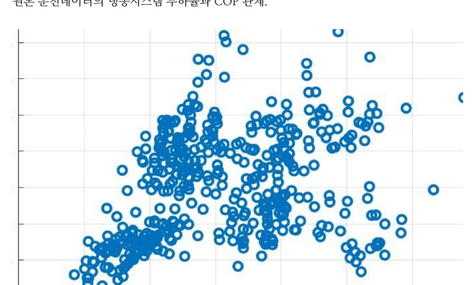

데이터로 찾는 산업·건물 에너지절감 실무 — 62쪽
그림 12-2. 원본 운전데이터의 냉동시스템 부하율과 COP 관계. [S04] 원본 운전데이터 분석자 료를 비식별 형태로 복원. IMPLEMENTATION | ‘가동대수 여유’는 곧바로 한 대를 정지할 수 있다는 의 미가 아니다. 헤더 구성, 예비기 정책, 최소유량과 공정별 냉수 요구조건을 확인 한 뒤 안전한 부하구간에서 단계적으로 시험한다. CASE 13 | 4 개 생산시설 냉동기·공기압축기 UPI Benchmark 및 가동대 수 최적화 4 개 생산시설의 저온(LT)·고온(HT) 냉동기와 CDA 공기압축기를 동일 KPI 로 비교해 Best Performance 를 Benchmark 로 활용하고, 실제 가동대수 와 필요대수 및 냉수 헤더 By-pass 상태를 개선기회로 연결한 사례다. 표 12-1. Utility · 연평균 UPI · 원 보고서 개선잠재 · 연간 절감액 추정 Utility 연평균 UPI 원 보고서 개선잠재 연간 절감액 추정 저온냉동기 시스템 약 0.59 kWh/RT 0.03 kWh/RT, 약 4.8% 약 5.65 억원/년 고온냉동기 시스템 약 0.47 kWh/RT 0.01 kWh/RT, 약 1.6% 약 4.30 억원/년 CDA 공기압축기 약 0.119 kWh/m³ 0.006 kWh/m³, 약 4.7% 약 31.07 억원/년

인쇄본 기준 p. 62